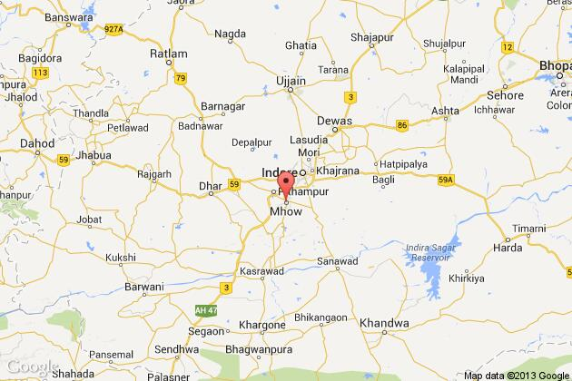

Mhow is nestled in the Vindhyachal ranges of Madhya Pradesh. Mhow, officially known as Dr Ambedkar Nagar, is a cantonment in the Indore District. It is located 23 kilometres south of Indore city towards Mumbai on the Mumbai-Agra Road. The town was renamed as Dr Ambedkar Nagar in 2003, by the Government of Madhya Pradesh.
How Mhow Got its Name..
There is a total confusion as to how Mhow got its name. Some say it got its name from Mahua tree, other say it derived its name from the adjacent village Mhow Gaon and the Army feels it Mhow stands for Military HQ of War. However Mhow was known even before the British established its cantonment in 1818. So the other two reasons seems correct.
The Cantonment..

Mhow cantonment was est in 1818 by the British. Until the Second World War Mhow was the home of the 5th Div of the Southern Army.
Post the war Mhow was choosen as a place of training establishment. Presently it houses three priemier Cat est of Indian Army viz
Military College of Telecommunication Engineering (MCTE), Army War College (AWC) and Infanrty School.